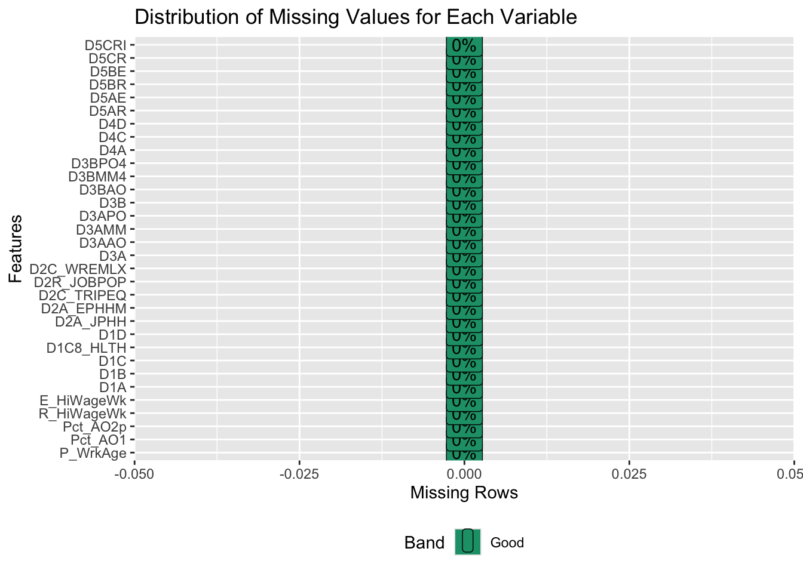
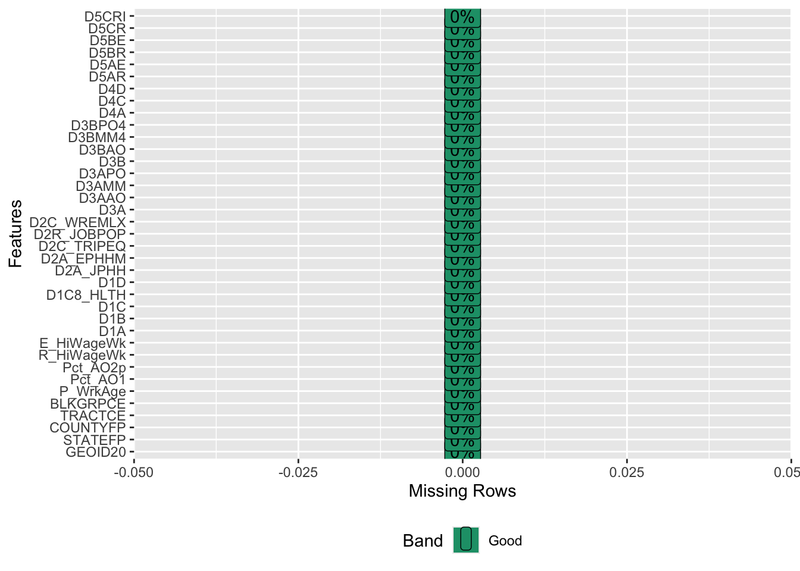
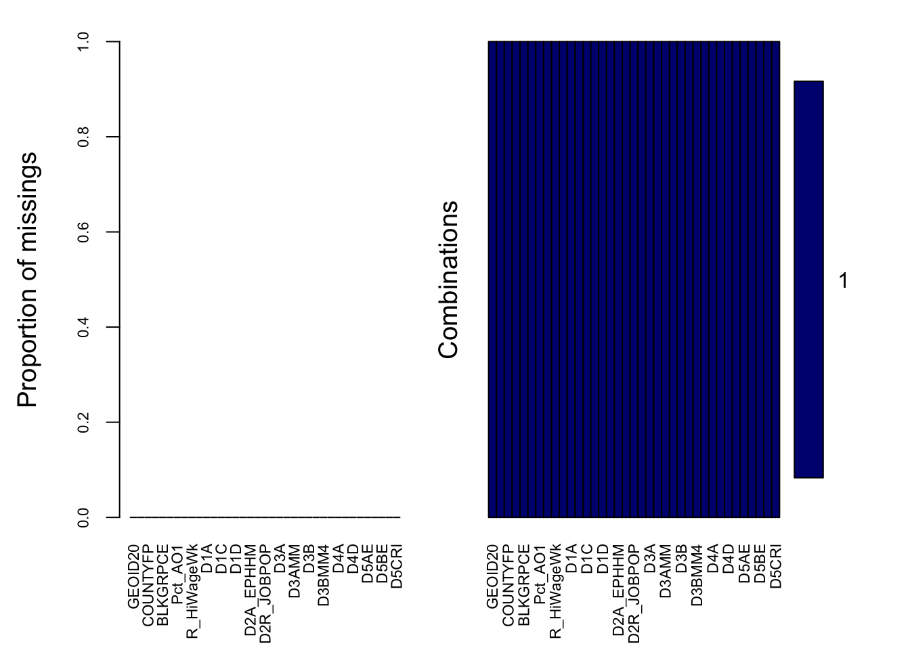

The SLD dataset (url: https://edg.epa.gov/EPADataCommons/public/OA/EPA_SmartLocationDatabase_V3_Jan_2021_Final.csv) was gathered by EPA (United States Environmental Protection Agency), which summarizes more than 90 different indicators associated with the built environment and location efficiency.Most attributes are available for all U.S. block groups.
EPA first released a beta version of the Smart Location Database in 2011. The initial full version was released in 2013, and the database was updated to its current version in 2021.
The format of the data is geometry data based on census block groups. We plan to select the features that can best describe our research question, and select the data falls into Manhatten area in New York city. We plan to plot the density distribution of the data to examine the usability of the features for future use.
2.1.1 Data dimension
The original SLD dataset dimension is Rows: 220740 Columns: 117, each row stands for each census block group unit. The columns include 90 indicators and other geometry IDs.
── Column specification ────────────────────────────────────────────────────────
Delimiter: ","
chr (2): CSA_Name, CBSA_Name
dbl (115): OBJECTID, GEOID10, GEOID20, STATEFP, COUNTYFP, TRACTCE, BLKGRPCE,...
ℹ Use `spec()` to retrieve the full column specification for this data.
ℹ Specify the column types or set `show_col_types = FALSE` to quiet this message.
2.1.2 Feature selection
We choose 32 features out of 90 to best describe the research question, all the features are from five prospects:demographics, density, design, transit access, destination accessibility.
For example: Demographics ‘P_WrkAge’, Percent of population that is working aged 18 to 64 years, Pct_AO1 ,Percent of one-car households in CBG, 2018 Pct_AO2p ,Percent of two-plus-car households in CBG, 2018 R_HiWageWk, Count of workers earning $3333/month or more (home location), 2017 E_HiWageWk, # of workers earning $3333/month or more (work location), 2017
We filtered the Manhatten data by selecting data with “STATEFP”==36, and “COUNTYFP”==61.The “STATEFP”==36 indicates the New York state, the “COUNTYFP”==61 is Manhatten area.
selected_columns <-c("P_WrkAge", "Pct_AO1", "Pct_AO2p", "R_HiWageWk", "E_HiWageWk", "D1A", "D1B", "D1C", "D1C8_HLTH", "D1D", "D2A_JPHH", "D2A_EPHHM", "D2C_TRIPEQ", "D2R_JOBPOP", "D2C_WREMLX", "D3A", "D3AAO", "D3AMM", "D3APO", "D3B", "D3BAO", "D3BMM4", "D3BPO4", "D4A", "D4C", "D4D", "D5AR", "D5AE", "D5BR", "D5BE", "D5CR", "D5CRI")man_miss<- man_data[, selected_columns]missing_plot <-plot_missing(man_miss,group =list(Good =0.05, OK =0.4, Bad =0.8, Remove =1),group_color =list(Good ="#1B9E77", OK ="#E6AB02", Bad ="#D95F02", Remove ="#E41A1C"),missing_only =FALSE, title ="Distribution of Missing Values for Each Variable")

There are no missing values in the dataset, as all features have 0 missing rows. In the plot_missing() function, when no missing values are present, the graph defaults to an x-axis scale ranging from -0.05 to 0.05. A similar case is demonstrated in the official reference: https://cran.r-project.org/web/packages/DataExplorer/vignettes/dataexplorer-intro.html
Code
#install.packages("naniar")vis_miss(man_miss)

We also use heatmap for missing value by packages(“naniar”), from the observations, 100% present of data are exsited. 0% percent value is missing.
Code
aggr(man_data, col =c('navyblue', 'red'), numbers =TRUE, sortVars =FALSE, labels =names(man_data), cex.axis =0.7, gap =3, main ="Missing Data Overview")

There is no missing data because proportion of missings is 0. If the combination count is 1 in the output of the aggr() function, it means there is only one distinct pattern of missingness across all the variables in the dataset. In other words:Every row with missing values has missingness in the exact same set of variables.No other unique missing value patterns exist in the dataset.